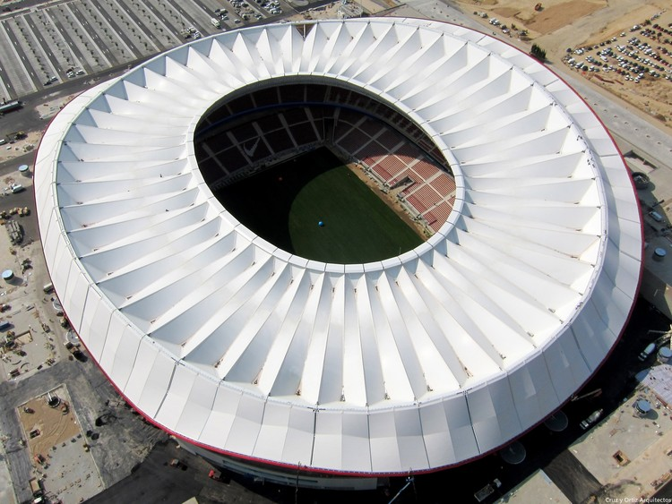

2019 Wanda Metropolitano Madrid España

Nombre del estadio: Wanda Metropolitano
Ubicación: Madrid, España.
Capacidad: Aproximadamente 68,456 espectadores.
Inauguración: 16 de septiembre de 2017.
Propietario: Atlético de Madrid.
Características destacadas:
Diseño moderno: El estadio tiene un diseño vanguardista con una estructura que combina acero y vidrio.
Techado completo: Cubre todas las gradas, protegiendo a los espectadores de las condiciones climáticas.
Sostenibilidad: El estadio cuenta con sistemas de eficiencia energética y gestión de residuos.
Museo del Atlético de Madrid: El estadio alberga un museo dedicado a la historia del Atlético de Madrid, uno de los clubes más exitosos de España.
Eventos importantes albergados en el Wanda Metropolitano
El Wanda Metropolitano ha sido sede de numerosos eventos importantes, entre ellos:
Final de la UEFA Champions League 2019: Liverpool vs. Tottenham Hotspur.
Partidos de la Liga de Campeones: El Atlético de Madrid ha jugado numerosos partidos de Champions League en este estadio.
Conciertos: Ha albergado conciertos de artistas internacionales como U2 y Coldplay.
Ubicación y cómo llegar
Dirección: Avenida de Luis Aragonés, 4, 28022 Madrid, España.
Transporte público:
Metro (Línea 7): Estación Estadio Metropolitano.
Autobús: Varias líneas de autobús conectan el estadio con el centro de Madrid.
Tren: Estación de Las Musas, a 10 minutos a pie del estadio.
Acceso en coche: El estadio cuenta con un amplio estacionamiento, pero se recomienda llegar temprano debido a la alta afluencia de público en eventos importantes.
Datos curiosos
El nombre "Wanda Metropolitano" hace referencia al patrocinador del estadio, el grupo chino Wanda, y al antiguo estadio del Atlético de Madrid, el Metropolitano.
El estadio fue diseñado por el arquitecto español Antonio Cruz.
Fue construido para reemplazar al antiguo Estadio Vicente Calderón, que fue demolido en 2019.
El Wanda Metropolitano es considerado uno de los estadios más modernos y funcionales de Europa.